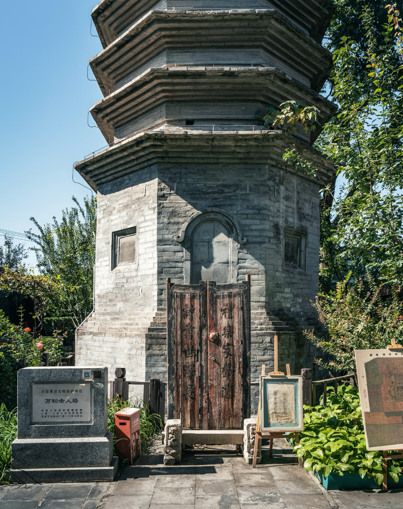
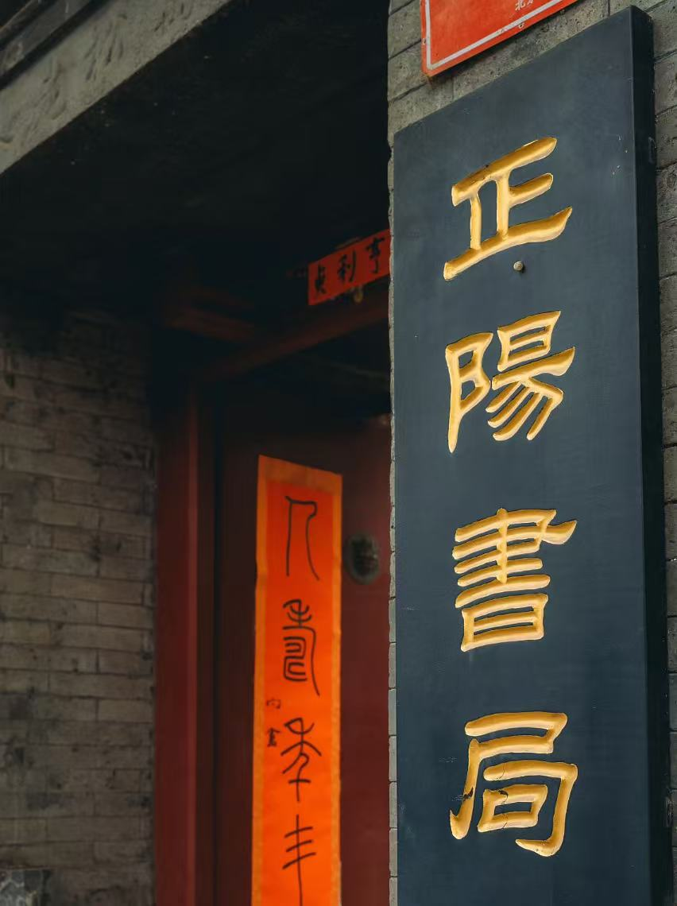

ROUTE 01
文学与光阴的交错
从古塔到藏书楼的北平三重时间
序章：一座塔，一部立在地上的密语
站在西四南大街的喧嚣里，抬头望见万松老人塔，八百余年的青砖八角密檐塔，谦卑地嵌在胡同肌理中，与百姓烟火为邻。塔主万松行秀是金元禅宗巨匠，其弟子耶律楚材——辅佐成吉思汗的一代名相，曾在此参学。

第一章：塔下书局，呼吸着的记忆
塔影所覆，便是正阳书局。推开不起眼的木门，仿佛跌进平行时空，这里是北京唯一专营北京地方文献的旧书店。泛黄的旧书、手绘地图、老照片，空气里弥漫着旧纸张与时光混合的芬芳。

✉️ 漫步任务 · 书局探索
"点击下方按钮，抽取你的书局探索任务"
第二章：红楼一梦，从光影到纸页的轮回
沿西安门大街西行不远，由红楼电影院改造的红楼公共藏书楼跃然眼前。1955年，它是首都第一家宽银幕立体声电影院；2018年，它转型为藏书楼，将放映机换成层层书格，延续着知识的生命。

✉️ 漫步任务 · 红楼寻踪
"点击下方按钮，抽取你的红楼探索任务"
尾声：三重时间的叠印
从万松老人塔（凝固的时间），到正阳书局（呼吸的时间），再到红楼藏书楼（流动的时间），不到一公里的路线完成了一场精妙的时空折叠。文学是贯穿这三重时间的金线，让每一个地点都充满了精神的温度。

📚 文学拼图游戏
将打乱的诗句重新排列，拼出完整的文学经典片段